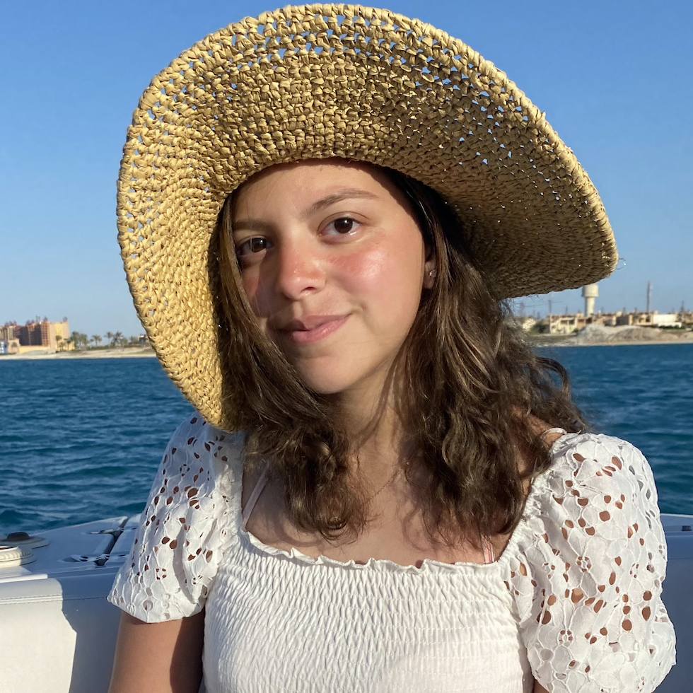
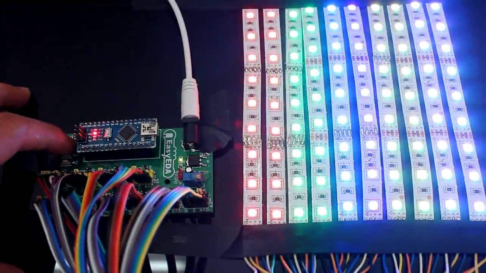

↑ My Journey Between Majors
Hello!
My name is Alia, and I am here to tell you about my journey of switching between majors and minors since I came to NYUAD!

Before starting university, I had decided that I want to major in Computer Science, and that was the only track I considered.
Freshman Fall


I started off as a Computer Science major as I had intened and took an Economics course to minor in it.
Freshman Spring

Decided that I actually want to consider Interactive Media and leave both, Computer Science and Economics for the semester to explore.
Freshman Summer
Decided that I want to major in Interactive Media only and minor in Computer Science and Economics.
Sophomore Fall
Chose to disregard Economics and major in Interactive Media with a minor in Computer Science.
Sophomore Spring
Decided to double major in Computer Science and Interactive Media.
Junior Year